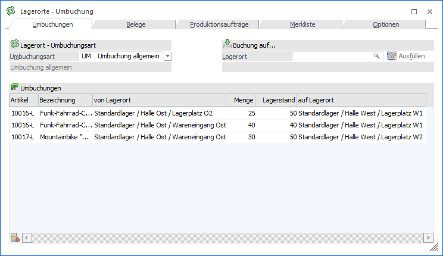

Über den Menüpunkt…
1 WinLine FAKT
1 Erfassen
1 Lagerverwaltung
1 Lagerorte - Umbuchung
… können Artikel von einem Ort auf einen anderen Lagerort umgebucht werden. Folgende Voraussetzungen sind hierbei zu erfüllen bzw. werden berücksichtigt:
ü Im Programm "Lagerorte - Umbuchungsarten" wurde zumindest eine Umbuchungsart definiert.
ü In der Umbuchungsart wurden Lagerortfunktionen (Feld "von Lager" bzw. "auf Lager" zugewiesen).
Hinweis
Bei jeder Art von Umbuchung bleibt der Lagerstand des Artikels (Artikeljournal) immer unverändert!

Das Fenster ist in die folgenden Register unterteilt, welche in den nachfolgenden Kapiteln detailliert beschrieben werden:
ü Register "Umbuchungen"
In diesem
Register können Umbuchungen manuell erfasst werden.
ü Register "Belege"
In diesem
Register können Umbuchungsvorschläge auf Grundlage von WinLine FAKT-Belegen
unterbreitet werden.
ü Register "Produktionsaufträge"
In
diesem Register können Umbuchungsvorschläge auf Grundlage von
Produktionsaufträgen unterbreitet werden.
ü Register "Merkliste"
In diesem
Register können Umbuchungsvorschläge auf Grundlage einer Merkliste unterbreitet
werden.
ü Register "Optionen"
In diesem
Register können benutzerspezifische Einstellungen, z.B. für die Auswahl von
Lagerorten oder dem Mengenvorschlag, definiert werden.
Buttons
Ø Ok (nicht in Register "Optionen")
Durch Anwahl des Buttons "Ok" bzw. der Taste F5 werden die Umbuchungen durchgeführt. Wenn in der verwendeten Umbuchungsart unter "Formular" ein Eintrag vorhanden ist, so wird ein entsprechendes Umbuchungsprotokoll ausgegeben.
Ø Ende
Durch Drücken des Buttons "Ende" bzw. der Taste ESC wird das Fenster geschlossen und alle nicht gespeicherten Umbuchungen verworfen.
Ø Umbuchungen initialisieren (nicht in Register "Optionen")
Mit Hilfe des Buttons "Umbuchungen initialisieren" bzw. der Taste F4 werden alle erfassten und nicht gebuchten Umbuchungen verworfen. Hierbei kann entschieden werden, ob die Initialisierung nur für das aktuelle oder alle Register vorgenommen werden soll.